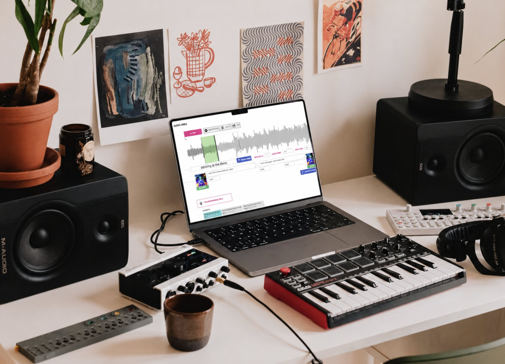
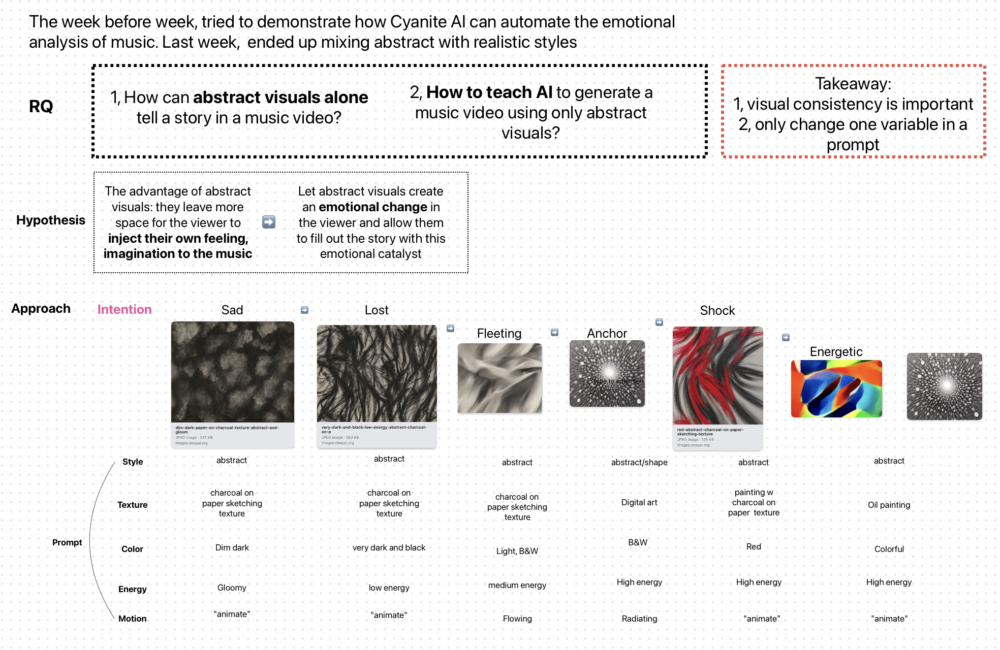
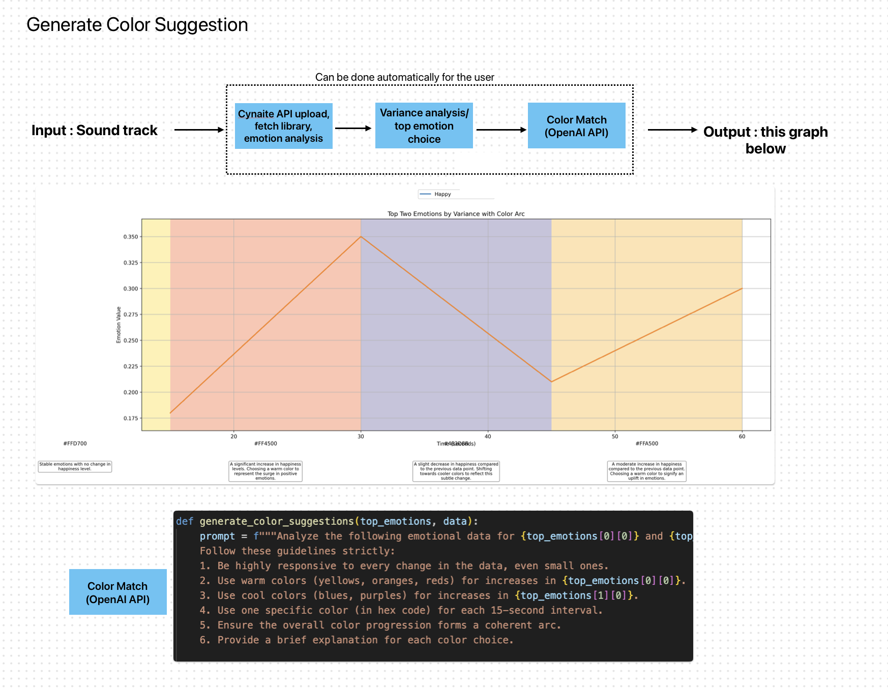
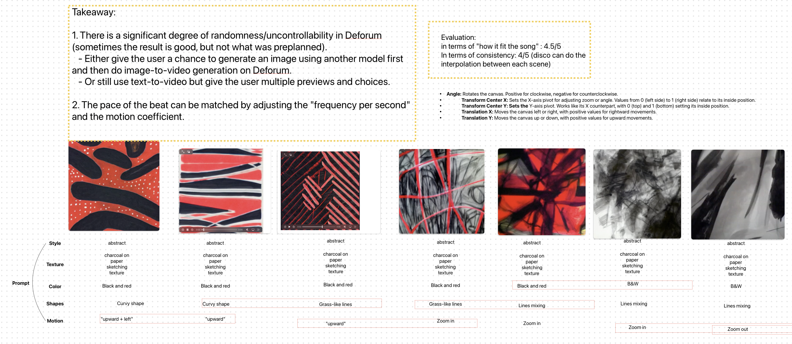
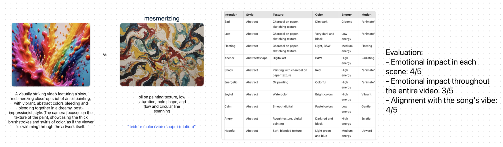
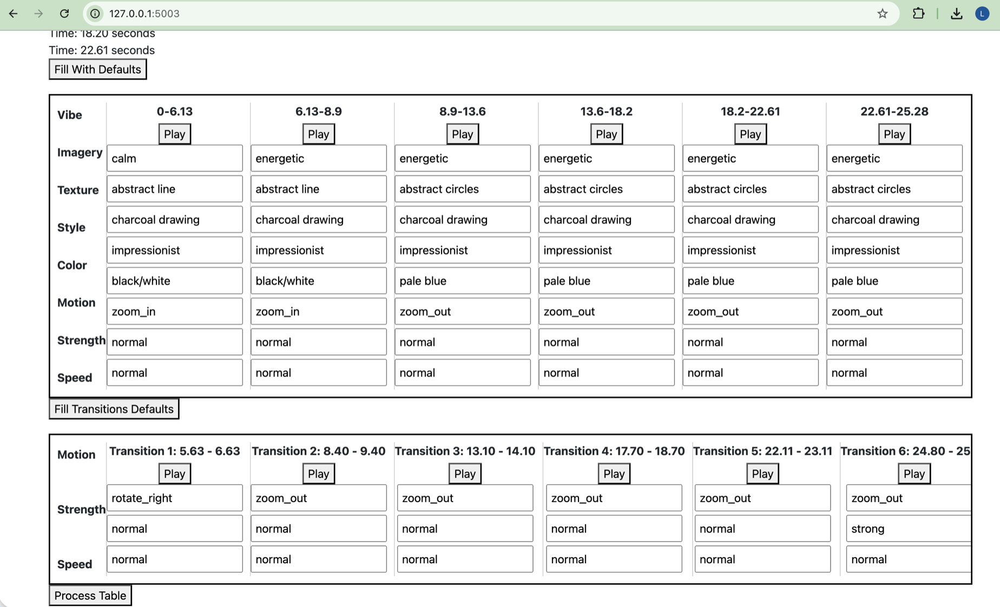

Generative Disco
Prototyped and built "Generative Disco," an end-to-end generative AI system that creates dynamic music visualizations using Large Language Models and text-to-video generation.
My specific role was evaluating different text-to-video and image-to-video APIs from Replicate, and using them to prototype AI pipelines (built in React and Vue.js) that could be integrated into a creative's process.
Selected Work Notes

Exploring how generative AI can create abstract audiovisual pieces centered on emotional change. Found that AI-generated abstract visuals tend to be inconsistent in style — so when prompt engineering, it's best to change one variable at a time.

Applying the OpenAI API to program a color-matching function that modifies the workflow for input sound. Pipeline: Track → Identify Emotion → Color Match.

Critiquing and evaluating the strengths and limitations of the Deforum tool.

Critiquing and evaluating different prompt engineering methodologies.

Testing a low-fidelity interactive prototype.
Publications
Co-authored the paper "Digital 'Double Hatters': Augmenting Audiovisual Creative Work with a Generative Text-to-Video Workflow," accepted by the 58th Hawaii International Conference on System Sciences.